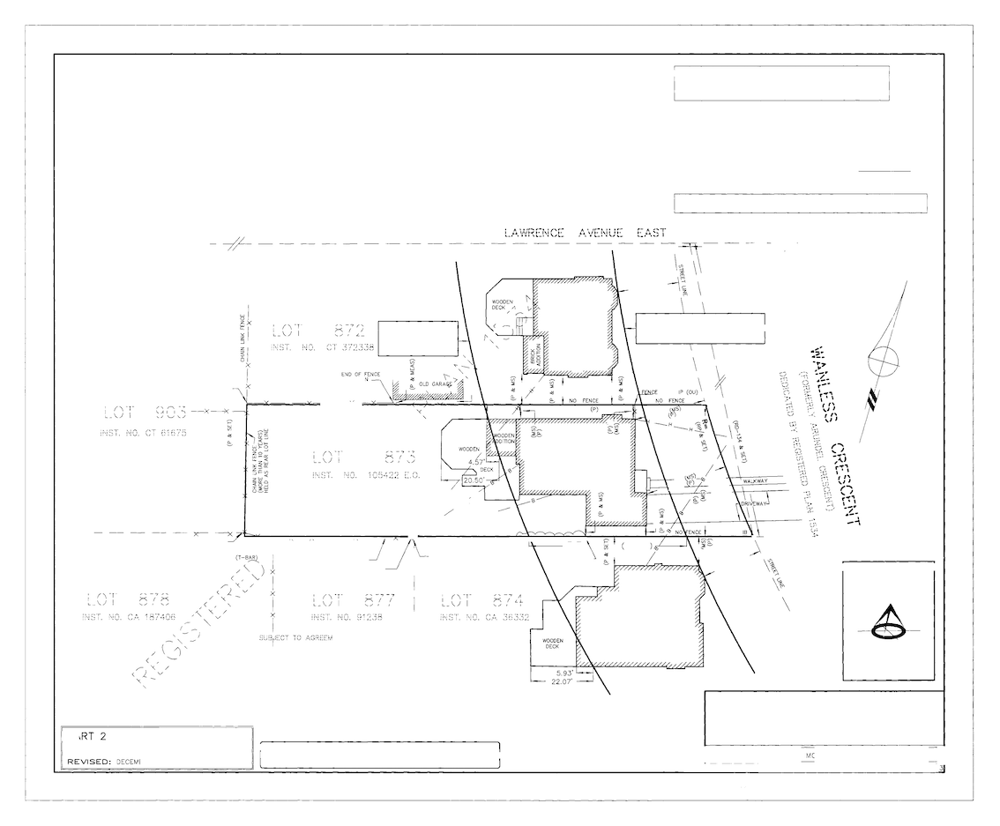

As a first step to 'decluttering' the survey plan image, remove recognizable text using the Tesseract OCR python library
from PIL import Image
import pytesseract
import numpy as np
import imageio
# confirm the version, should be 4.x
pytesseract.get_tesseract_version()
LooseVersion ('4.0.0')
# The original image, all greys sharpened to black, for input
source_file = './data/output/00_66428_for_OCR.png'
# The original image sharpened by <= 150 greyscale
grey_150_file = './data/output/00_66428_for_clipping.png'
# OCR text contained in the file
text_file = './data/output/03_66428_for_OCR.txt'
# bounding box coordinate text file
b_box_text_file = './data/output/03_66428_b_box.txt'
# sliced grey file that has clipping extraced
sliced_grey_file = './data/output/03_66428_grey_sliced.png'
Note that the current and future version do not accept black- nor white-listed characters. This makes processing difficult as the engine attempts to process all glyphs, not just letters and numbers
# all_text = pytesseract.image_to_string(Image.open(source_file), config="-c tessedit_char_whitelist=ABCDEFGHIJKLMNOPQRSTUVWXYZ")
all_text = pytesseract.image_to_string(Image.open(source_file))
# open a file and write the contents
with open(text_file, 'w') as fpo:
fpo.write(all_text)
Unfortunately, the bounding boxes are not exact (training is required for the specific font being captured, even if the available training sets due a great job, the boxes will be fuzzy)
b_boxes = pytesseract.image_to_boxes(Image.open(source_file))
# open a file and write the contents
with open(b_box_text_file, 'w') as fpo:
fpo.write(b_boxes)
# helper function to convert Tesseract coordinates to image coords
def b_box_text_to_slices(shape, box_text, buffer_size=0.1, y_scale=10.0):
''' Function to convert Tesseract coordinates to image coordinates as numpy slices.
(Tesseract and PIL don't use the same coordinate conventions)
Due to the fuzzy nature of the bounding boxes, buffer and scale the boxes.
'''
all_slices = []
# X,Y are Tesseract coordinates
# x,y are PIL-numpy coordinates
for line in b_boxes.split('\n'):
line_list = line.split(' ')
X1 = int(line_list[1])
Y1 = int(line_list[2])
X2 = int(line_list[3])
Y2 = int(line_list[4])
x1 = shape[0] - Y2
x2 = shape[0] - Y1
y1 = X1
y2 = X2
x_buffer = int(np.rint((x2 - x1) * buffer_size))
y_buffer = int(np.rint((y2 - y1) * buffer_size * y_scale))
x1 -= x_buffer
x2 += x_buffer
y1 -= y_buffer
y2 += y_buffer
all_slices.append(np.s_[x1:x2, y1:y2])
return all_slices
source_img = Image.open(source_file)
source_image = np.array(source_img)
slices = b_box_text_to_slices(source_image.shape, b_boxes, 0.1, 10.0)
# open the grey 150 image, the original file for EDA and SVM modeling
grey_img = Image.open(grey_150_file)
grey_image = np.array(grey_img)
# for all of the text box slices, blank them out with white (greyscale = 255)
for a_slice in slices[:-2]:
grey_image[a_slice] = 255
# save the modified grey image
imageio.imwrite(sliced_grey_file, grey_image)
Even some of the stencil fonts have been 'recognized', but those are a false-positives as individual glyphs within the letter that have been labeled as punctuation marks. Tesseract did fulfill its purpose of removing unnecessary glyphs that could be recognied by other OCR processes and leave behind large glyphs and stencil fonts.

This relies on raw glyph dimensions and image processing.